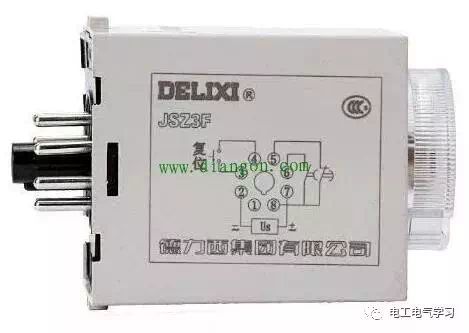
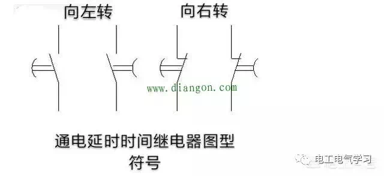
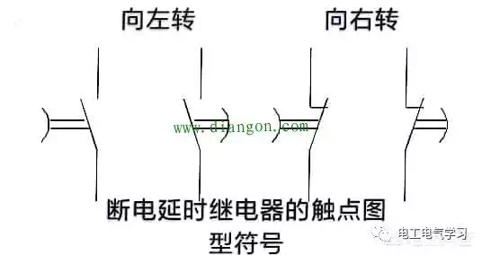
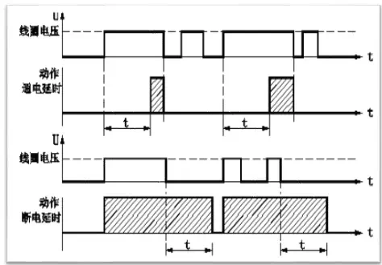

 断电延时时间继电器的触点，是在继电器通电工作后触点动作，继电器断电后，延时时间到达预置设定的时间触点恢复原始状态。  通电延时时间继电器的触点看圆弧，圆弧向圆心方向移动，带动触点延时动作。 再看断电延时时间继电器的触点的图形符号：  断电延时时间继电器的触点也是看圆弧，通电后触点动作。断电后，圆弧向圆心方向移动，带动触点延时复位。  第三行是断电延时时间继电器线圈电压的时序图，第四行是断电延时时间继电器的触点动作时序图。 我们看到，当线圈电压出现上升沿时，触头动作。当线圈电压出现下降沿时，断电延时时间继电器进入延时状态。当时间长于延迟时间t，则触头返回。 注意：对于线圈电压来说，只要出现上升沿，触头就一定动作。